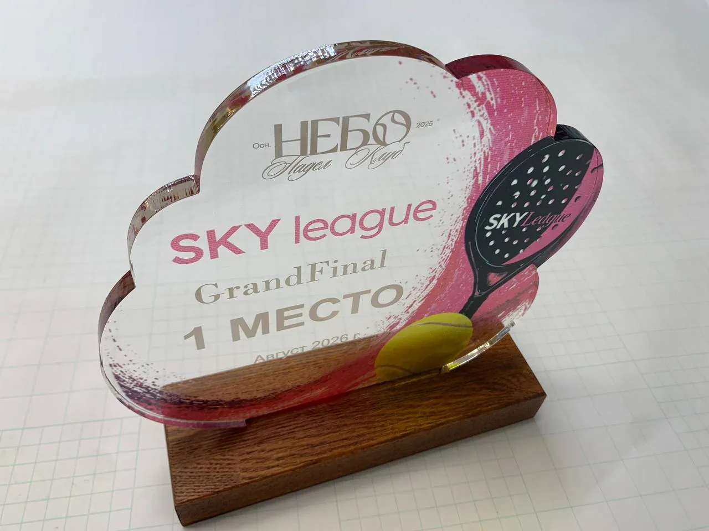
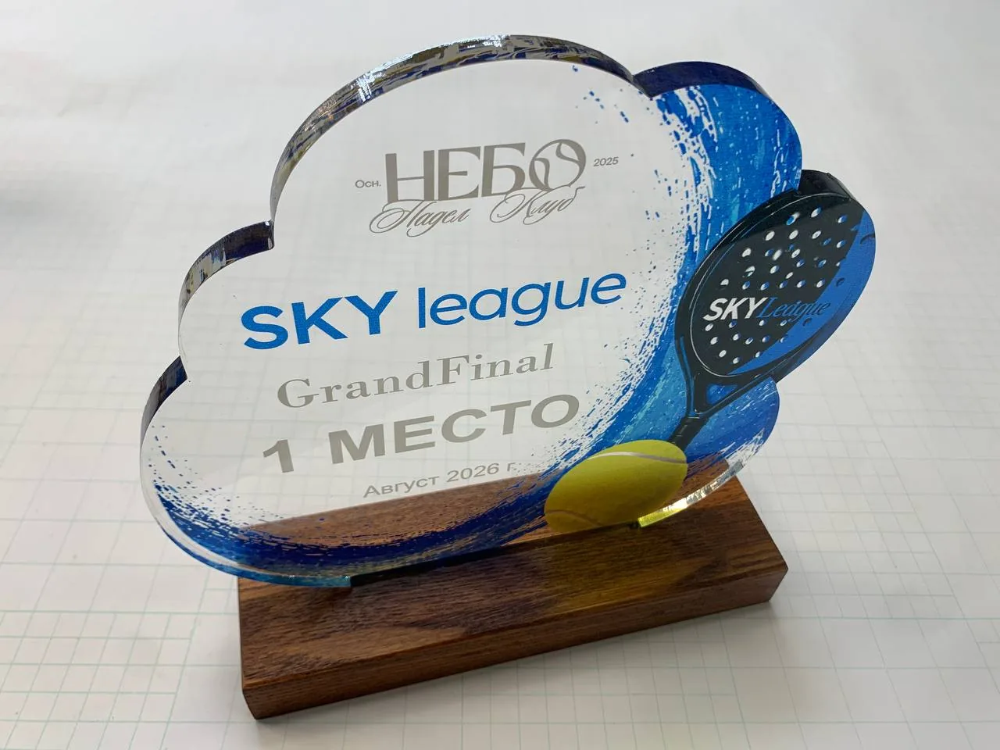

← Все награды
Награды для спортивного события
SKY league
Ракетка, мяч и яркая графика — награды для Grand Final SKY league. Предметная серия, в которой спортивная тема определяет и форму, и детали.
Ясень и оргстеклоУФ-печатьНаграды и медали

01 / Награды для спортивного события
Спорт в каждой детали
Силуэт ракетки и изображение мяча вписаны в многослойную композицию из тонированного маслом ясеня и оргстекла. Фрезерованные и отполированные огнём фаски, прямая полноцветная УФ-печать и шильды с гравировкой завершают серию. В неё также входят медали из оргстекла с прямой печатью и атласными лентами.


От идеи до готового объекта
Есть похожая задача?
Расскажите о вашем проекте — обсудим оформление, детали и реализацию.